Premonio
From onboarding into a complex B2B platform to leading the project on my own as designer and PM.
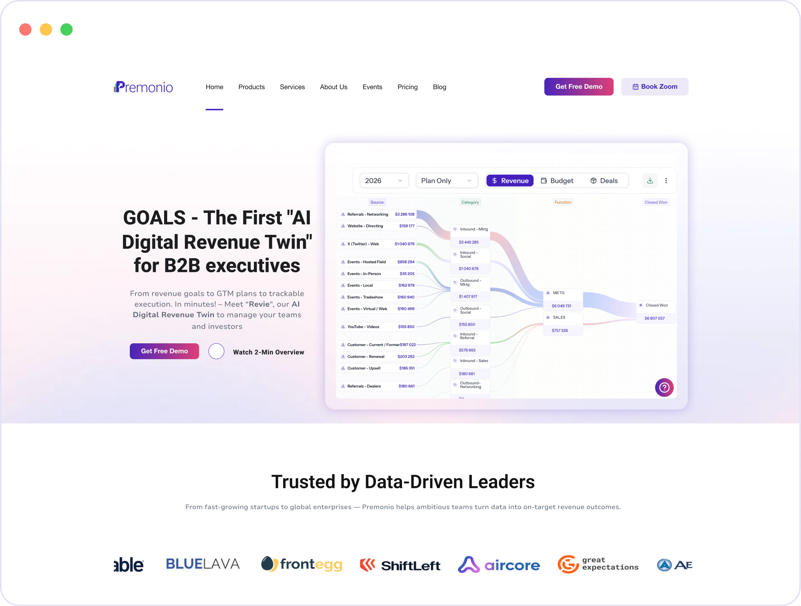
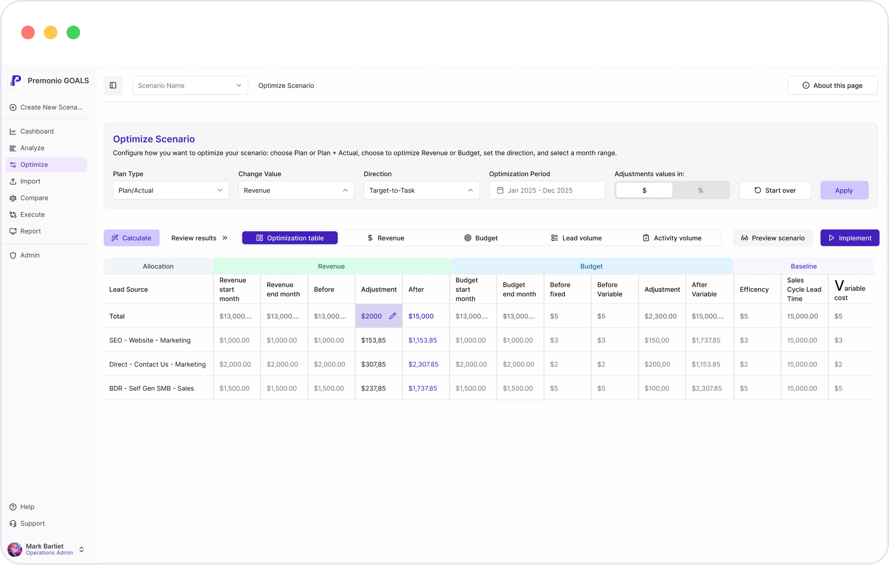
01 — ABOUT
A digital revenue twin for B2B
Premonio GOALS is an “AI Digital Revenue Twin” for B2B executives. The platform turns a revenue target into a GTM plan, tracks plan vs. actual and suggests what to adjust.
- CEO
- CRO
- CMO
- Investors (VC / PE)
02 — MY ROLE
From team designer to project lead
This was one of my first projects at Basa Solutions. I started as a designer on the team: getting to know the platform and supporting the UI.
While working on the website, I took over the project and led it on my own — as both designer and PM.
01
Platform onboarding
Moving screens into Figma, placeholders, the Optimize screen
02
Audit and new website
Old website audit, copy, structure, visuals
03
PDF case studies and decks
Customer case studies, slides, LinkedIn posts
04
Leading the project
Client, tasks and team — on me
What I did
- Platform onboarding
- Optimize screen
- Platform workflow diagram
- Website audit
- Website copy & structure
- Color concept
- PDF case studies
- Presentations
- Posts
- Client management
Optimize screen — with ideas from my team lead · website development — dev team · final copy edits — client
03 — PLATFORM
Getting to grips with a complex product
A platform with a dozen modules — scenarios, analysis, optimization, reports — whose screens existed only in the live product.
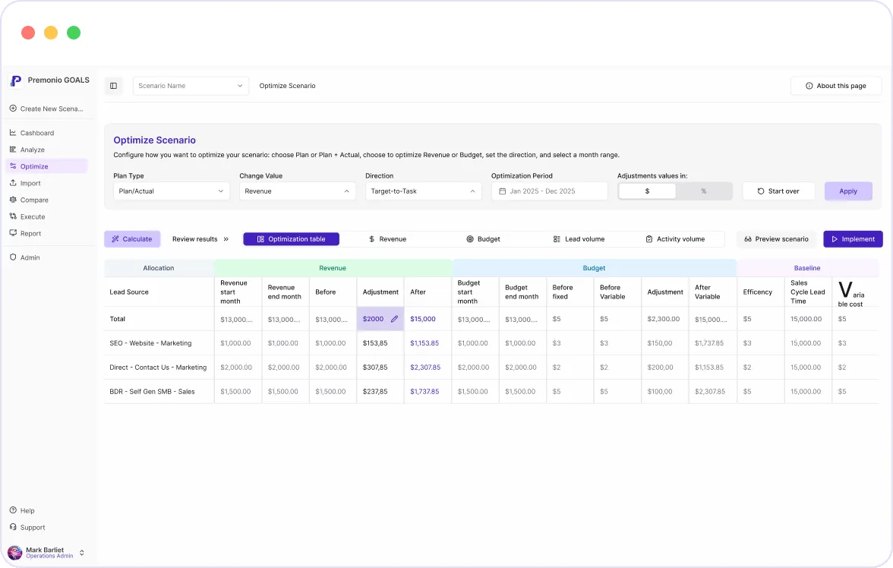
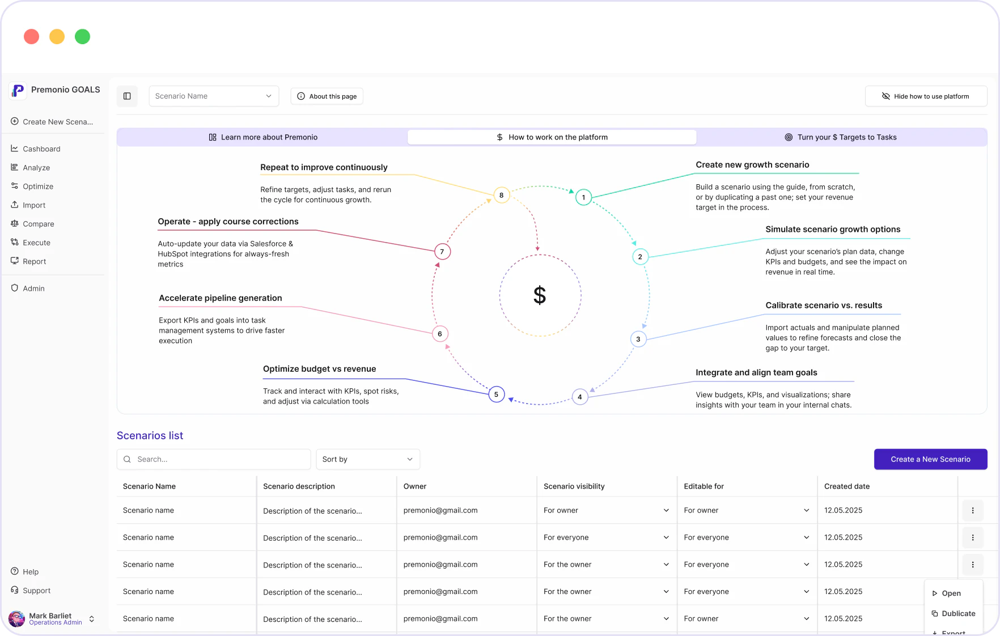
Moved the platform into Figma
I recreated the live platform’s screens in Figma — they became the base for further changes.
Placeholders for screens in progress
I made placeholders for screens the team was still working on.
Optimize screen
I designed the Optimize screen, building on ideas from my team lead.
Explained how the platform works
An 8-step diagram — from creating a scenario to continuous improvement. It shows users the full Premonio workflow.
04 — WEBSITE
Explaining the product more simply
The old website looked outdated. The copy didn’t explain what the product does, and buttons and content were placed illogically — the point of Premonio got lost.
Refresh the visuals, copy and messaging while keeping the site simple on WordPress, without complex solutions.
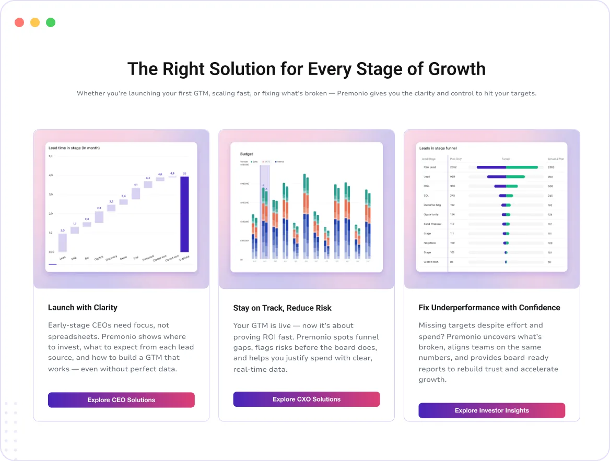
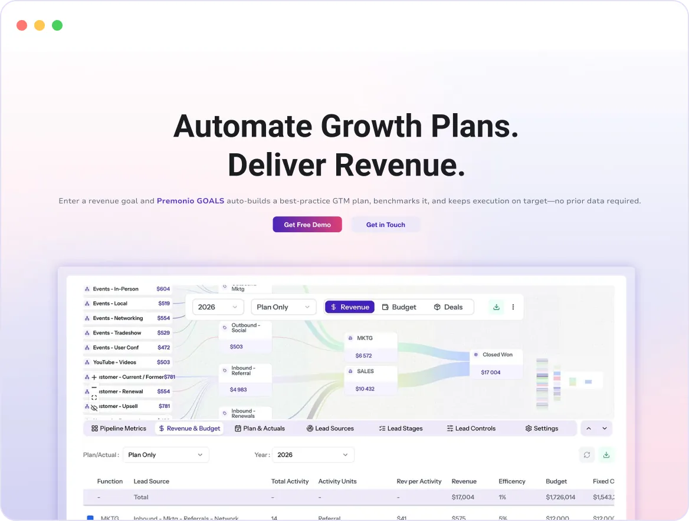
04.1 — AUDIT → DECISIONS
What was wrong and what changed
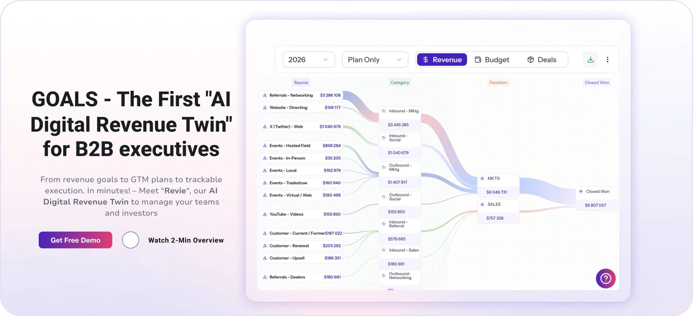
PROBLEM
Unclear value proposition
DECISION
I rewrote the hero and GOALS positioning so the first screen makes clear what the product is and who it’s for.
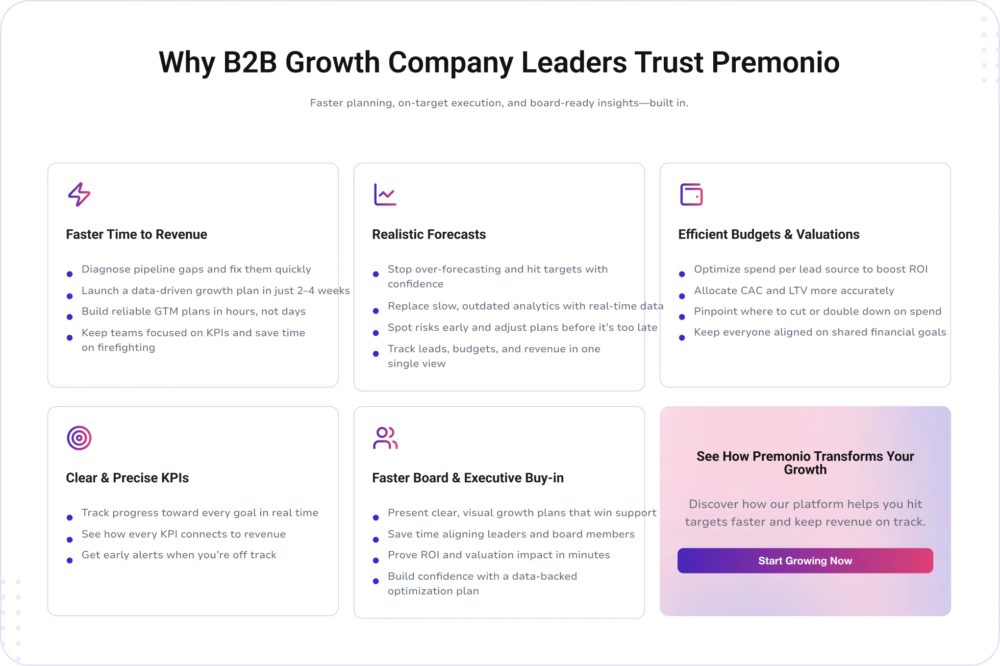
PROBLEM
Repeated content
DECISION
I removed duplication across sections and pages — each block answers its own question.
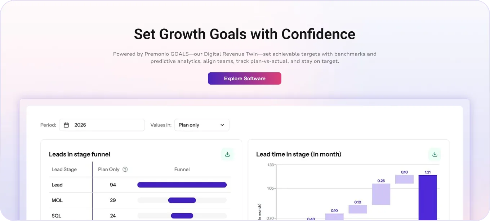
PROBLEM
Weak CTAs
DECISION
I reworked the calls to action so the path to a demo is obvious.
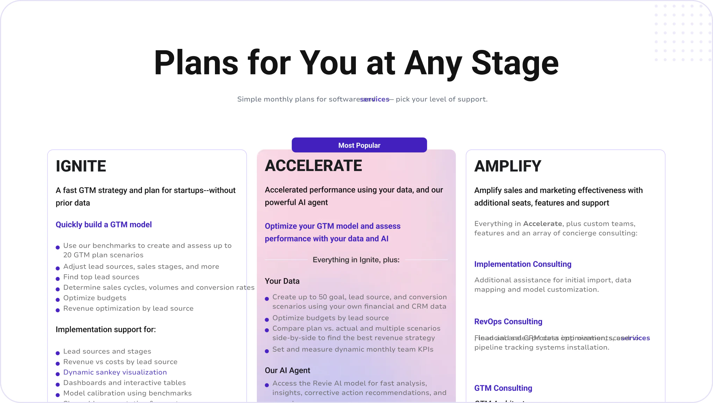
PROBLEM
Confusing structure and a weak product explanation
DECISION
A new page structure: the three service phases, pricing cards, FAQ and a clear presentation of the app’s features.
04.2 — PAGES & FEEDBACK
The whole site, not just the homepage
I worked on every page of the site and adapted my decisions to the client’s feedback.
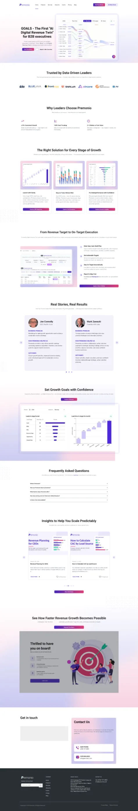
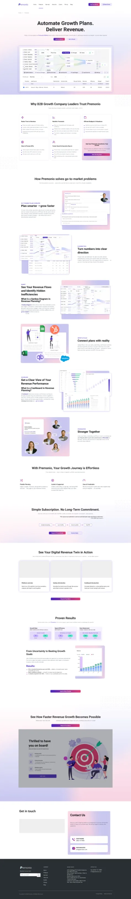
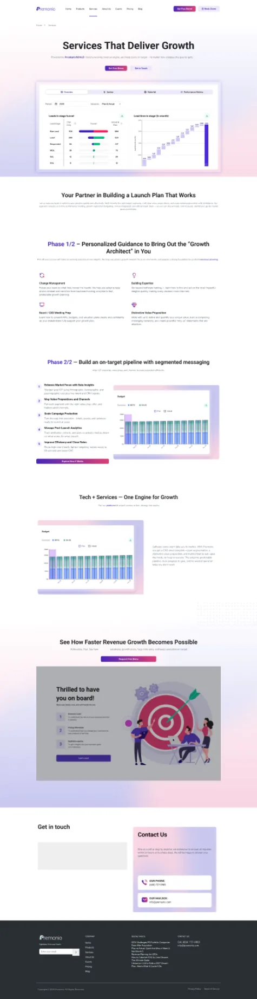
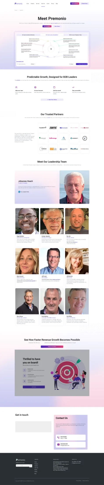
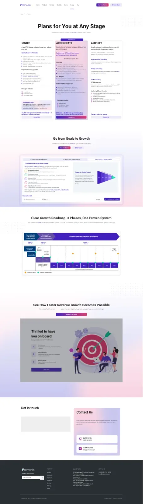
+ Events, Blog, Blog Post, Contact Us
How I worked with feedback
Keep layout changes to a minimum
I adapted the new solutions to the existing layout.
More about the app on the homepage
I added sections about the app itself to the homepage.
Different hero wording
I rewrote the hero based on the client’s comments.
Remove duplication in Real Stories
I removed the repetition in the testimonials section.
Audience scenarios: CEO, CXO, investors
I shortened the copy and structured the value proposition for each scenario.
OUTCOME
The website was approved by the client and launched. Development was done by the dev team.
- Figma mockups
- UI-kit
- Optimized images
WEBSITE · FROM AUDIT TO LAUNCH
9 pages, copy, structure and visuals — all within the existing layout.
05 — VISUAL DIRECTION
A calm palette
I proposed a restrained color concept without unnecessary brightness — and the client chose it.
06 — PDF CASE STUDIES
PDF case study design
Beyond the product and the website, I designed PDF case studies for Premonio.
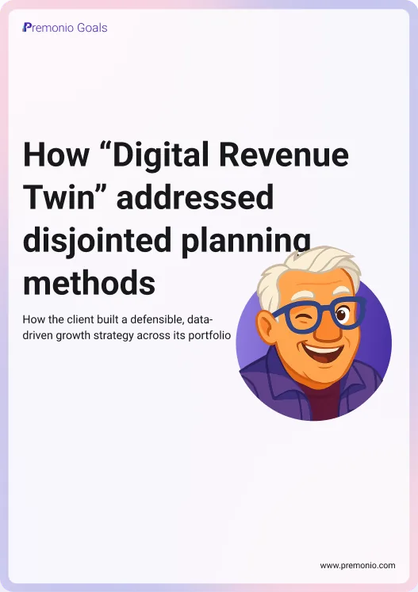
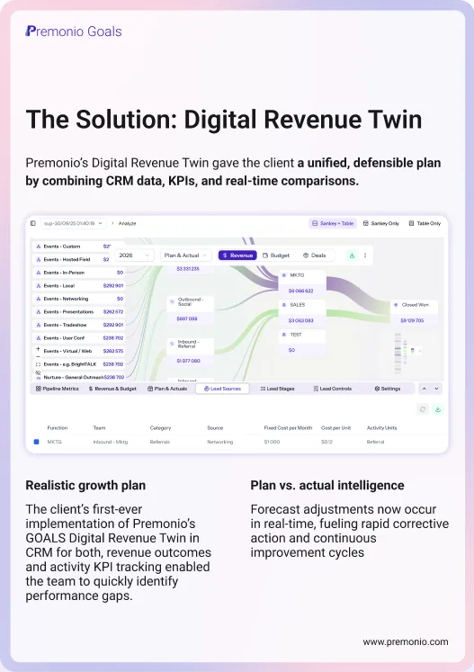
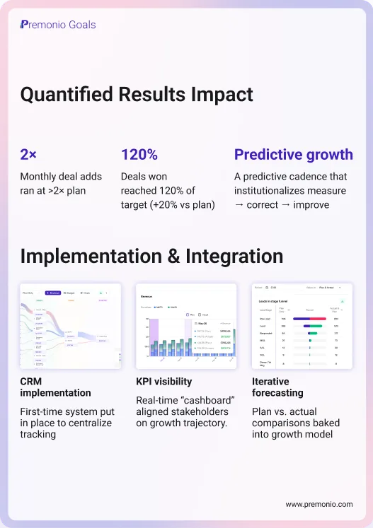
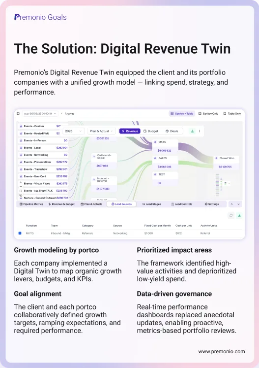
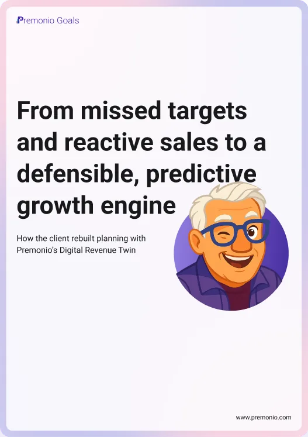
07 — PRESENTATIONS & CONTENT
Design beyond the product
After the website launch, I helped the client with marketing: I made Google Slides presentations for their B2B clients and LinkedIn posts. The slides are confidential, so they’re shown here as placeholders.
08 — LEADING THE PROJECT
A single point of contact
At some point I became the only person between the client and our studio — and led the project as both designer and PM.
Communication
Calls with the client and their team, and all correspondence — handled by me.
Summaries & follow-ups
Summaries after calls and reminders about open questions.
Tasks & estimates
I set up tasks in ClickUp and estimated the scope of work.
Team sync
My team always knew what was happening on the project and what I was doing.
FROM DESIGN TO PROJECT LEAD
Platform, website, PDF case studies, presentations — and a client I worked with directly.
09 — REFLECTION
What this project taught me
This project taught me more than design: how to manage a client, explain decisions, plan tasks and keep the team in the loop.
Onboarding through practice
Recreating screens in Figma helped me quickly understand a complex B2B product.
Simplicity is a decision too
WordPress constraints pushed me to focus on copy and structure.
Owning the project
When the project passed to me, I learned to manage the client and tasks on my own.
Communication is part of design
Summaries, reminders and team syncs kept the project moving.
Website launched · premonio.com